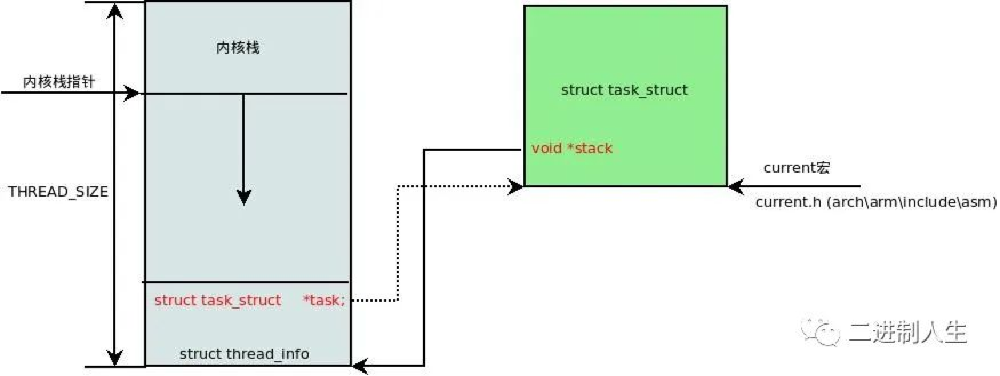
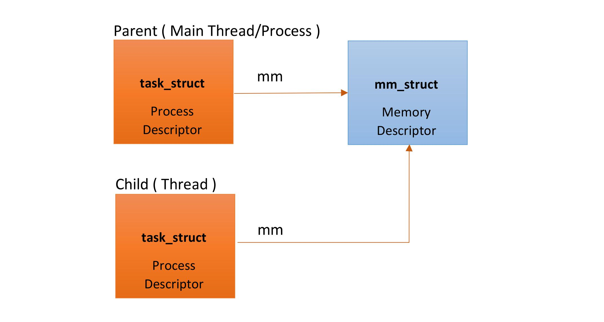

概述
- 本篇讲述 context switch 和 mode switch
一 每个新的 task_struct 内核至少要关注三个核心模型
- 每次创建一个新的 task_struct, 内核层面都至少创建三个核心模型:
-
内核栈,task_struct结构体,thread_info结构体, 我们重点关注内核栈,task_struct结构体,thread_info结构体
-
- 其中
用户栈将在未来讨论
- 其中
1 thread_info 结构体
A 进程平台相关信息--thread_info
struct thread_info 是记录部分进程信息的结构体(具体来说是平台相关的进程信息，该结构体是平台相关的)，其中包括了进程上下文信息:
struct thread_info {
unsigned long flags; /* low level flags */
int preempt_count; /* 0 => preemptable, <0 => bug */
mm_segment_t addr_limit; /* address limit */
struct task_struct *task; /* main task structure */
__u32 cpu; /* cpu */
__u32 cpu_domain; /* cpu domain */
...
struct cpu_context_save cpu_context; /* cpu context */
__u32 syscall; /* syscall number */
...
};
- 关键是其中的 task 成员，指向的是所创建的进程的 struct task_struct 结构体。
B 为什么需要 thread_info
内核还需要存储每个进程的 PCB 信息, linux 内核是支持不同体系的的, 但是不同的体系结构可能进程需要存储的信息不尽相同, 这就需要我们实现一种通用的方式, 我们将体系结构相关的部分和无关的部门进行分离。
用一种通用的方式来描述进程, 这就是 struct task_struct, 而 thread_info 就保存了特定体系结构的汇编代码段需要访问的那部分进程的数据,我们在 thread_info 中嵌入指向 task_struct 的指针, 则我们可以很方便的通过 thread_info 来查找 task_struct。
2 内核栈
- 内核栈通常是 2 个 page 大小。因为 32 位和 64 位体系结构的页面大小分别是 4KB 和 8KB，所以通常它们的内核 栈 的 大小 分 别 是 8 K B 和 1 6 K B。
- 其中
内核栈是使用thread_union结构体表示, 并且thread_info结构体位于栈底部.
进程描述符 task_struct 中有一个成员：void *stack;就是指向该进程内核栈的栈底。
union thread_union {
#ifndef CONFIG_ARCH_TASK_STRUCT_ON_STACK
struct task_struct task;
#endif
#ifndef CONFIG_THREAD_INFO_IN_TASK
struct thread_info thread_info;
#endif
unsigned long stack[THREAD_SIZE/sizeof(long)];
};


2.1 内核栈作用
在陷入内核后，系统调用中也是存在函数调用和自动变量，这些都需要栈支持。用户空间的栈显然不安全，需要内核栈的支持。
2.2 为什么需要单独的进程内核栈？
所有进程运行的时候，都可能通过系统调用陷入内核态继续执行。假设第一个进程 A 陷入内核态执行的时候，需要等待读取网卡的数据，主动调用 schedule() 让出 CPU；此时调度器唤醒了另一个进程 B，碰巧进程 B 也需要系统调用进入内核态。那问题就来了，如果内核栈只有一个，那进程 B 进入内核态的时候产生的压栈操作，必然会破坏掉进程 A 已有的内核栈数据；一但进程 A 的内核栈数据被破坏，很可能导致进程 A 的内核态无法正确返回到对应的用户态了。
二 context switch 和 mode switch 区别
- At a high level, there are two separate mechanisms to understand.
-
- The first is the kernel entry/exit mechanism: this switches a single running thread from running usermode code to running kernel code in the context of that thread, and back again.
-
- The second is the context switch mechanism itself, which switches in kernel mode from running in the context of one thread to another.
So, when Thread A calls sched_yield() and is replaced by Thread B, what happens is:
-
- Thread A enters the kernel, changing from user mode to kernel mode;
-
- Thread A in the kernel context-switches to Thread B in the kernel;
-
- Thread B exits the kernel, changing from kernel mode back to user mode.
Each user thread has both a user-mode stack and a kernel-mode stack. When a thread enters the kernel, the current value of the user-mode stack (SS:ESP) and instruction pointer (CS:EIP) are saved to the thread’s kernel-mode stack, and the CPU switches to the kernel-mode stack – with the int $80 syscall mechanism, this is done by the CPU itself. The remaining register values and flags are then also saved to the kernel stack. When a thread returns from the kernel to user-mode, the register values and flags are popped from the kernel-mode stack, then the user-mode stack and instruction pointer values are restored from the saved values on the kernel-mode stack.
When a thread context-switches, it calls into the scheduler (the scheduler does not run as a separate thread – it always runs in the context of the current thread). The scheduler code selects a process to run next, and calls the switchto() function. This function essentially just switches the kernel stacks – it saves the current value of the stack pointer into the TCB for the current thread (called struct taskstruct in Linux), and loads a previously-saved stack pointer from the TCB for the next thread. At this point it also saves and restores some other thread state that isn’t usually used by the kernel – things like floating point/SSE registers.
So you can see that the core user-mode state of a thread isn’t saved and restored at context-switch time – it’s saved and restored to the thread’s kernel stack when you enter and leave the kernel. The context-switch code doesn’t have to worry about clobbering the user-mode register values – those are already safely saved away in the kernel stack by that point.
1 mode switch
mode switch是一个运行的 task 从 user-mode 切换到 kernel-mode，或者切换回来。
2 context switch
context switch一定发生在 kernel mode，进行 task 的切换。因此 context switch 时，不用担心把 user-space 的数据弄丢。
每个用户的 task_struct 有一个 user-mode stack 和一个 kernel-mode stack，当从 user-mode 切换到 kernel-mode 时，寄存器的值要保存到 kernel-mode stack，反之，从 kernel-mode 切换回 user-mode 时，要把寄存器的值恢复出来。这是 CPU 自动做的。(因此肯定比 context switch 成本要低) 进行“context switch”时，scheduler 将当前 kernel-mode stack 中的值保存在 task_struct 中，并把下一个将要运行 task 的 task_struct 值恢复到 kernel-mode stack 中， （scheduler 是内核代码）这样，从 kernel-mode 返回到 user-mode，（此时 CPU 自动把 kernel-mode stack 上的内容全部复制到了该 task_struct 的 user-mode stack），就会运行另外一个 task。
3 一个 context
一个 Context 包含了： 存储程序运行所需的 CPU 寄存器 和 一个指令计数器,前者是在 CPU 内部的，存储一些变量的地寄存器， 后者是用于表示 CPU 当前执行的指令或者下一个要执行的指令。
三 关于 context switch 的一些其他见解
1 context switch 分为哪几种
context swich 分为 3 种：
- 1 同一个线程之间由 user mode 进入 kernel mode（反之依然）
- 2 同一的进程的不同线程之间
- 3 不同的进程之间 这 3 种消耗依次增大；
理论上 CPU 由 user mode 进入 kernel mode 或者 kernel mode 进入 user mode 称为 mode switch 而不是 context switch ,然而在使用 vmstat 工具进行监控时，明显发现把 mode switch 也统计了进去.
我们再来总结下，为什么上述消耗依次增大
Linux 内核中，没有进程和线程的区别，取而代之的是一个 task_struct 结构体的概念，用于统一表示 CPU 要运行的任务;
我们看下 task_struct 中有哪些重要的字段: 1 当前 thread 的状态
/* task_struct 記錄著目前這 Process 的狀態 */
struct task_struct { volatile long state; // -1 unrunnable, 0 runnable, >0 stopped};
2 当前 thread 的 mm_struct
/* task_struct 就有一個指向 mm_struct 的變數 */
struct task_struct { struct mm_struct *mm // point to memory descriptor};
其实也就是说，Process 都有自己的 mm_struct,如果新生成出来的 task_struct 有自己独立的 mm_struct，那么它就代表是一个新进程；如果没有 mm_struct，而是共用它的父进程的 mm_struct,那么它就是一个线程, 如下图所示:

另外，每个 task_struct 都有自己的 kernel stack 和 user stack； kernel stack 如下:
linux中进程使用task_struct数据结构描述，其中有一个stack指针
struct task_struct
{
// ...
void *stack; // 指向内核栈的指针
// ...
};
task_struct数据结构中的stack成员指向thread_union结构（Linux内核通过thread_union联合体来表示进程的内核栈）
每個 task_structs 都會有一個 kernel stack ，提供在 Kernel mode 時進行運算時，可存放臨時變數的地方。
在真正 context switch 时，CPU 是如何工作的呢?
Thread A enters the kernel, changing from user mode to kernel mode;
Thread A in the kernel context-switches to Thread B in the kernel;
Thread B exits the kernel, changing from kernel mode back to user mode.
也就是说，CPU 进入 kernel mode，把 Thread A 的 user stack 的内容 copy 到自己的 kernel stack；调度代码开始执行(scheduler 开始执行)，CPU 切换至 Thread B 的 kernel stack； CPU 把 Thead B 的 kernel stack copy 到 Thread B 的 user stack，并且进入 user mode；这样就从 Thread A context switch 到 Thread B.
我们知道 stack 的特性：1 体积很小 2 数量充足 3 在 CPU 内部 4 速度很快
由此我们可以理解为什么 context switch 的消耗依次增大了: 1 同一个线程内，CPU 由 user mode 进入 kernel mode，应该是要把 user stack 的内容 copy 到 kernel stack，然后开始运行 system call 所指定的那部分代码.
2 同一个进程之间不同线程之间的 context switch ，无需替换当前的 mm_struct
3 不同进程之间进行 context switch，除了上述步骤之外，仍需替换整个 mm_struct,新进程的 pagetable 应该要被装入 MMU 管理单元。CPU 发出的内存地址都是虚拟机地址，有 MMU 管理单元（硬件）自动完成虚拟地址到物理地址的转化